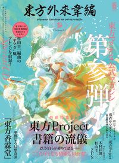
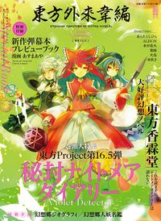
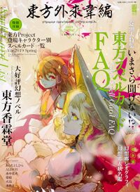

- Welcome to Touhou Wiki!
- Please register to edit. For assistance, check in with our Discord server or IRC channel.
Strange Creators of Outer World
Strange Creators of Outer World | |
|---|---|
|
| |
| Publisher | |
| Released |
September 2015 - ongoing |
| Genre |
Magazine |
| Writers | |
| Illustrators | |
Touhou
Information[edit]
The magazine features interviews and introductions of doujin creators in all fields of Touhou fandom, newbie-friendly information on the Touhou universe, and a new serialization of Curiosities of Lotus Asia by ZUN. The inaugural issue also featured an in-depth interview about Legacy of Lunatic Kingdom, an interview about Urban Legend in Limbo with Twilight Frontier's Unabara Iruka, a Play, Doujin! interview with its game developers, and a music arrangement CD.
Press[edit]
Strange Creators of Outer World was first announced via Twitter by synno_takana, a fan who spotted press materials at Comiket 88.[1][2] An official website was soon revealed. A preview of the first issue was released on September 24.[3]
Download (RAW)[edit]
Strange Creators of Outer World Volume.1 RAW
Strange Creators of Outer World Volume.2 RAW
Strange Creators of Outer World Volume.3 RAW
Strange Creators of Outer World Volume.4 RAW
Strange Creators of Outer World Volume.5 (2018 Spring!) RAW
Strange Creators of Outer World Volume.6 (2018 Autumn!) RAW
Strange Creators of Outer World Volume.7 (2019 Spring!) RAW
Strange Creators of Outer World Volume.1[edit]
| 東方外來韋編 Strange Creators of Outer World Volume.1 | |
|---|---|
|
| |
| Publisher | |
| Released |
2015-09-30 |
| Genre |
Magazine |
| Writers |
ZUN |
| Illustrators | |
| Pages |
160 |
| Followed by |
Strange Creators of Outer World Volume.2 |
| ISBN | |
Contents[edit]
- pg. 001: Foreword by ZUN
- pg. 002-003: Table of contents
Main Feature[edit]
- pg. 004-009: "Touhou Kanjuden ~ Legacy of Lunatic Kingdom."
- pg. 010-013: Strange Creators Interview 01 - ZUN (Legacy of Lunatic Kingdom interview)
Feature 2[edit]
- pg. 014-019: "Touhou Shinpiroku ~ Urban Legend in Limbo."
- pg. 020-021: Strange Creators Interview 02 - Unabara Iruka (Urban Legend in Limbo interview)
Feature 3[edit]
- pg. 022-023: Play, Doujin! × Touhou Project
- pg. 024-025: Gensou no Rondo (CUBETYPE)
- pg. 026-027: Strange Creators Interview 03 - 響谷ゆろ
- pg. 028-029: Fushigi no Gensokyo -THE TOWER OF DESIRE- (AQUA STYLE)
- pg. 030-031: Strange Creators Interview 04 - JYUNYA (AQUA STYLE)
- pg. 032-033: Strange Creators Interview 05 - Zukki & Naocchi (Area-ZERO)
- pg. 034-035: Strange Creators Interview 06 - Mediascape (Fumio Oyamada and Ezaki Nozomu)
Feature 4[edit]
- pg. 036: Strange Creators Interview Music Edition
- pg. 036-037: Strange Creators Interview 07 - GUCCI
- pg. 038-040: Strange Creators Interview 08 - 嵯峨飛鳥 / かませ虎 / senya
- pg. 041-042: Strange Creators Interview 09 - Masayoshi Minoshima
- pg. 043: Appendix CD-ROM Compilation Song Intro
- pg. 044-051: Who's Who of Humans & Youkai in Gensokyo
- pg. 052-055: Basic Knowledge of Fantastic Words 2015
- pg. 056-059: Touhou Kourindou ~ Curiosities of Lotus Asia.: Chapter 28: The Aloof and Alone Curio Shop Owner
- pg. 060-062: Touhou Project Chronology
- pg. 063: Kadokawa Touhou Comics Lineup Ad Page (Forbidden Scrollery, Touhou Sangetsusei)
Comics[edit]
- pg. 064: Derivative Warning
- pg. 065-081: The First Magic by Hitori
- pg. 082: Ad Page
- pg. 083-095: わらしべナズーリン by 相生青唯
- pg. 096: Ad Page
- pg. 097-109: 霊夢転身 by Haniwa
- pg. 110: Ad Page
- pg. 111-125: ある日の幻想郷社会活動 by Mizutaki
- pg. 126: Ad Page
- pg. 127-139: はじめてのスペルカード？ by Suichuu Hanabi
- pg. 140: Ad Page
- pg. 141-153: 霊夢と！弾幕大掃除 by Toto Nemigi
- pg. 154: Ad Page
- pg. 155-159: やってやれ幻想郷 バースト by Toshihira Arata
Special Addition[edit]
- pg. 160: Touhou Project Arrange CD featuring SOUND HOLIC, Yuuhei Satellite, and Alstroemeria Records
- Bonus artwork by Masakichi
Strange Creators of Outer World Volume.2[edit]
| 東方外來韋編 Strange Creators of Outer World Volume.2 | |
|---|---|
|
| |
| Publisher | |
| Released |
2016-06-30 |
| Genre |
Magazine |
| Writers |
ZUN |
| Illustrators | |
| Pages |
160 |
| Followed by |
Strange Creators of Outer World Volume.3 |
| ISBN | |
Contents[edit]
- pg. 001: Genji Asai Artbook Ad
- pg. 002-003: Table of contents
Main Feature: Team Shanghai Alice × Twilight Frontier[edit]
- pg. 004-010: Strange Creators Interview 01 - ZUN × Unabara Iruka
- pg. 011-016: Strange Creators Interview 02 - ZUN × U2 Akiyama
- pg. 017: Appendix CD-ROM Compilation Song Intro
Feature 2[edit]
- pg. 018-019: Introduction of Previous Works (1) Embodiment of Scarlet Devil
- pg. 020-021: Embodiment of Scarlet Devil Stage Cross Review
- pg. 022-023: Fragment of Phantasy
- pg. 024-025: Introduction of Previous Works (2) Perfect Cherry Blossom
- pg. 026-027: Perfect Cherry Blossom Stage Cross Review
- pg. 028-029: Fragment of Phantasy (2)
- pg. 030-031: Introduction of Previous Works (3) Imperishable Night
- pg. 032-033: Imperishable Night Stage Cross Review
- pg. 034-035: Fragment of Phantasy (3)
- pg. 036-037: Strange Creators Interview 03 - ZUN (Let's Look Back At Early Trilogy)
Play,Doujin! × Touhou Project[edit]
- pg. 038-039: Strange Creators Interview 04 - tripper_room
- pg. 040-041: Strange Creators Interview 05 - ですのや☆
- pg. 042-045: Play, Doujin! Forum
- pg. 046-059: Who's Who of Humans & Youkai in Gensokyo
- pg. 060-063: Touhou Kourindou ~ Curiosities of Lotus Asia. Chapter 29: The Holder of Knowledge All about Occult
Comics[edit]
- pg. 064: Derivative Warning
- pg. 065-081: 永遠探偵かぐや～満月の姫が欠けたピースを照らし出す！蘇る不死鳥とオクラホマミキサー事件～ by Hitori
- pg. 082: Kadokawa Touhou Novel Lineup (Touhou Kourindou)
- pg. 083-095: きりなし一夜抄 by 相生青唯
- pg. 096: Ad Page
- pg. 097-109: 妖怪の偏人 by Haniwa
- pg. 110: Ad Page
- pg. 111-123: よろこびとパチュリー by Mizutaki
- pg. 124: Ad Page
- pg. 125-137: Lunatic昔語り by Suichuu Hanabi
- pg. 138: Ad Page
- pg. 139-143: やってやれ幻想郷エクストリーム by Toshihira Arata
- pg. 144: Ibarakasen Ad Page
- pg. 145-157: 庭師妖夢頑張る！ by Aya Azuma
- pg. 158: Suzunaan Ad Page
- pg. 159: Ad Page
Special Addition[edit]
- pg. 160: Touhou Project Arrange CD featuring Uni Akiyama and ZUN
- Bonus artwork by Masakichi
Strange Creators of Outer World Volume.3[edit]
| 東方外來韋編 Strange Creators of Outer World Volume.3 | |
|---|---|
|
 | |
| Publisher | |
| Released |
2017-03-02 |
| Genre |
Magazine |
| Writers |
ZUN |
| Illustrators | |
| Pages |
164 |
| Followed by |
Strange Creators of Outer World Volume.4 |
| ISBN | |
Contents[edit]
- pg. 001: Genji Asai / Kususaga Rin Art Works Ad Page
- pg. 002-003: Table of contents
Main Feature[edit]
- pg. 004-019: Touhou Project Print Work Styles (Interview with ZUN)
- pg. 019: Alternative Facts in Eastern Utopia Ad
- pg. 020-021: Urban Legend in Limbo (ver.PS4) Interview with Iruka Unabara
Feature 2[edit]
- pg. 022: A look at "Hero Yamada-kun"
- pg. 023: "Hero Yamada-kun" Overview
- pg. 024-029: "Hero Yamada-kun" × Touhou Project Interview
Feature 3[edit]
- pg. 030-031: Introduction of Previous Works (1) Immaterial and Missing Power
- pg. 032-033: Judgement & Award-Giving Review! Immaterial and Missing Power
- pg. 034-035: Fragment of Phantasy (1)
- pg. 036-037: Introduction of Previous Works (2) Phantasmagoria of Flower View
- pg. 038-039: Judgement & Award-Giving Review! Phantasmagoria of Flower View
- pg. 040-041: Fragment of Phantasy (2)
- pg. 042-043: Introduction of Previous Works (3) Shoot the Bullet
- pg. 044-045: Fragment of Phantasy (3)
- pg. 046-047: Let's Look Back At IaMP-PoFV-StB
- pg. 048-056: Who's Who of Humans & Youkai in Gensokyo
- pg. 057: Kadokawa Touhou Novel Lineup Ad Page
- pg. 058-061: Touhou Kourindou ~ Curiosities of Lotus Asia. Chapter 30: The World Where Many Facts Coexist
Comics[edit]
- pg. 062: Derivative Warning
- pg. 063-079: 酔文依存症 by Hitori
- pg. 080: Ad Page
- pg. 081-093: 感染！ゆめ花わ小径 by 相生青唯
- pg. 094: Ad Page
- pg. 095-107: 射命丸文の考察 by Haniwa
- pg. 108: Ad Page
- pg. 109-123: EXTRA Stage by Mizutaki
- pg. 124: Ad Page
- pg. 125-137: 人形解放Stage 1 by Suichuu Hanabi
- pg. 138: Ad Page
- pg. 139-143: やってやれ幻想郷ＴＷＩＮ by Toshihira Arata
- pg. 144: Ibarakasen Ad Page
- pg. 145-157: 文とはたて なかよくけんかしな！ by Aya Azuma
- pg. 158: Kadokawa Touhou Book Lineup (Alternative Facts in Eastern Utopia)
- pg. 159: Ad Page
Special Addition[edit]
- pg. 160: Touhou Project Arrange CD featuring Kei'ichi Sugiyama
- Bonus artwork by Masakichi
Strange Creators of Outer World Volume.4[edit]
| 東方外來韋編 Strange Creators of Outer World Volume.4 | |
|---|---|
|
| |
| Publisher | |
| Released |
2017-10-31 |
| Genre |
Magazine |
| Writers |
ZUN |
| Illustrators | |
| Pages |
162 |
| Followed by |
Strange Creators of Outer World. 2018 Spring! |
| ISBN | |
Contents[edit]
- pg. 001: Alternative Facts in Eastern Utopia Ad Page
- pg. 002-003: Table of contents
Main Feature[edit]
- pg. 004-011: Hidden Star in Four Seasons Overview
- pg. 012-017: Strange Creators Interview 01 - ZUN (Hidden Star in Four Seasons Interview)
- pg. 018-019: Play,Doujin! × Touhou Project - Strange Creators Interview 02 - 苺坊主
- pg. 020-021: Play,Doujin! × Touhou Project - Strange Creators Interview 03 - JYUNYA (AQUA STYLE)
- pg. 022-026: Strange Creators Interview 04 - 石鹼屋
- pg. 027: Appendix CD-ROM Compilation Song Intro
- pg. 028-031: Strange Creators Interview 05 - Makoto Hirasaka (Three Fairies Interview)
Feature 2[edit]
- pg. 032-049: "Mountain of Faith" 10 Year Anniversary Reconsideration
- pg. 032-038: Mountain of Faith Overview
- pg. 037: Fragment of Phantasy 1
- pg. 039: Fragment of Phantasy (2)
- pg. 040-041: Mountain of Faith Stage Cross Review
- pg. 042-043: Fragment of Phantasy (3)
- pg. 044-049: Strange Creators Interview 06 - ZUN Talks About Mountain of Faith
- pg. 050-054: Who's Who of Humans & Youkai in Gensokyo
- pg. 055: Genji Asai / Kususaga Rin Art Works Ad Page
- pg. 056-059: Touhou Kourindou ~ Curiosities of Lotus Asia. Chapter 31: Warm Trap at Woodstove
Comics[edit]
- pg. 060: Derivative Warning
- pg. 061-079: ケロケロ帽子の家出 by Hitori
- pg. 080: Ad Page
- pg. 081-095: 風が吹いた日 by Suichuu Hanabi
- pg. 096: Kadokawa Touhou Novel Lineup (Touhou Kourindou)
- pg. 097-109: レミリアさまに叱られるから by Aoi Kujira
- pg. 110: Ad Page
- pg. 111-123: Newbie Tengu Shinmyoumaru (The sequel) by Haniwa (Continuation from Alternative Facts in Eastern Utopia)
- pg. 124: Ad Page
- pg. 125-133: やってやれ幻想郷 by Toshihira Arata
- pg. 134: Ad Page
- pg. 135-143: にとりのスマホでドン！ by Aya Azuma
- pg. 144: Ad Page
- pg. 145-159: 早苗のにおいと神々と by Mizutaki
Special Addition[edit]
- pg. 160: Touhou Project Arrange CD featuring Sekken'ya
- Bonus artwork by Masakichi
Strange Creators of Outer World. 2018 Spring! (Volume 5)[edit]
| 東方外來韋編 Strange Creators of Outer World. 2018 Spring! | |
|---|---|
|
| |
| Publisher | |
| Released |
2018-03-30 |
| Genre |
Magazine |
| Writers |
ZUN |
| Pages |
164 |
| Followed by |
Strange Creators of Outer World. 2018 Autumn! |
| ISBN | |
Contents[edit]
- pg. 001: Alternative Facts in Eastern Utopia Ad Page
- pg. 002-003: Table of contents
Opening Feature[edit]
- pg. 004: Antinomy of Common Flowers
- pg. 010: Perfect Possession Interview: ZUN x Iruka Unabara
Feature 2[edit]
- pg. 014:
- Let's take a look at the new products at Reitaisai and the future of Touhou Project
- Strange Creators Interview 02 - 北條孝宏
Feature 3[edit]
- pg. 022: Strange Creators Interview 03 - Marasy
- pg. 044: Strange Creators Interview 05 - Hitori
Feature 4[edit]
- pg. 026-027: Introduction of Previous Works (1) Subterranean Animism (Overview)
- pg. 028-029: Subterranean Animism Stage Cross Review
- pg. 030-031: Fragment of Phantasy (1)
- pg. 032-033: Introduction of Previous Works (2) Undefined Fantastic Object (Overview)
- pg. 034-035: Undefined Fantastic Object Stage Cross Review
- pg. 036-037: Fragment of Phantasy (2)
- pg. 040-043: Strange Creators Interview 04 - ZUN: Let's Look Back At SA/UFO
New Projects[edit]
- pg. 040: Gensokyo Geography
- pg. 048: Who's Who of Humans & Youkai in Gensokyo:
- pg. 054: Touhou Kourindou ~ Curiosities of Lotus Asia. Chapter 32: Free-spirited Person in the Spring and Conscionable Nightmare
Comics[edit]
- pg. 058: Derivative Warning
- pg. 059: The Parasite who came home again by Hitori
- pg. 078: Ad page
- pg. 079: The Craziest Deciding Match! by Haniwa
- pg. 092: Ad page
- pg. 093: Jigoku meguride bucchigiri! by Mizutaki
- pg. 110: Ad page
- pg. 111: Youkai Dragnet: Eight-Eyed Yamame by Suichuu Hanabi
- pg. 128: Ad page
- pg. 129: Zoku: Warashibe Nazrin by Aoi Kujira
- pg. 138: Ad page
- pg. 139: Yatteyare Gensoukyou by Toshihira Arata
- pg. 146: Ad page
- pg. 147: Buddhist Drinking Precept ALISON
Special Addition[edit]
- Touhou Project Arrange CD featuring Marasy
- Bonus artwork by Masakichi
Strange Creators of Outer World. 2018 Autumn! (Volume 6)[edit]
| 東方外來韋編 Strange Creators of Outer World. 2018 Autumn! | |
|---|---|
|
 | |
| Publisher | |
| Released |
2018-10-01 |
| Genre |
Magazine |
| Writers |
ZUN |
| Pages |
140 |
| Followed by |
TBA |
| ISBN | |
Contents[edit]
- pg. 001: Ad Page for Touhou Kourindou
- pg. 002-003: Table of Contents
Main Feature[edit]
- pg. 004-011: Violet Detector
- pg. 008-010: The Secret History of Violet Detector
- pg. 011: Ad page for AFiEU
Feature 2[edit]
- pg. 012-015: Introduction of Previous Works (1) Scarlet Weather Rhapsody
- pg. 016-017: Fragment of Phantasy (1)
- pg. 018-019: Introduction of Previous Works (2) Touhou Hisou Tensoku
- pg. 020-021: Fragment of Phantasy (2)
- pg. 022-023: Judgement & Award-Giving Review! SWR & Soku
- pg. 024-025: Fantasy Kannushi ZUN Reviews SWR & Soku
- pg. 026-029: Gensokyo Geography
Feature 3[edit]
- pg. 030-033: Mangaka Interview: Suichuu Hanabi
- pg. 034-035: Ad page
- pg. 036-039: Who's Who of Humans & Youkai in Gensokyo
- pg. 040-045: Touhou Kourindou ~ Curiosities of Lotus Asia.: Chapter 33: There Are Three Sumireko Usami!
Comics[edit]
- pg. 046: Derivative Warning
- pg. 047-065: 天子、宇宙へ行く by Hitori
- pg. 066: Ad page
- pg. 067-079: 萃香のやつ酔いが醒めたらどうなるんだ？ by Haniwa
- pg. 080: Ad page
- pg. 081-095: 幼地心と秋の空 by Mizutaki
- pg. 096: Ad page
- pg. 097-111: ふたりの二次 by Suichuu Hanabi
- pg. 112: Ad page
- pg. 113-121: やってやれ幻想郷 by Toshihira Arata
- pg. 122: Ad page
- pg. 123-135: 仙果がころりん by ALISON
- pg. 136: Colophon
Special Addition[edit]
- New Touhou Project Danmaku Book Preview (Comic by Aya Azuma)
- Back Cover
Strange Creators of Outer World. 2019 Spring! (Volume 7)[edit]
| 東方外來韋編 Strange Creators of Outer World. 2019 Spring! | |
|---|---|
|
 | |
| Publisher | |
| Released |
2019-03-04 |
| Genre |
Magazine |
| Writers |
ZUN |
| Pages |
140 |
| Followed by |
TBA |
| ISBN | |
Contents[edit]
- pg. 001: Table of Contents
Main Feature[edit]
- pg. 002-09: Is It Too Late To Ask!? - Touhou Spell Cards FAQ
Feature 2[edit]
- pg. 010-013: Introduction of Previous Works (1) Ten Desires
- pg. 014-015: Fragment of Phantasy (1)
- pg. 016-019: Introduction of Previous Works (2) Hopeless Masquerade
- pg. 020-021: Fragment of Phantasy (2)
- pg. 022-023: Ten Desires Stage Cross Review
- pg. 024-025: Fantasy Kannushi ZUN Reviews Ten Desires & Hopeless Masquerade
- pg. 026-029: Gensokyo Geography
Feature 3[edit]
- pg. 030-033: Mangaka Interview: Mizumoto Tadashi
- pg. 034-038: Who's Who of Humans & Youkai in Gensokyo
- pg. 39: Ad page for Alternative Facts in Eastern Utopia
- pg. 040-045: Touhou Kourindou ~ Curiosities of Lotus Asia.: Chapter 34: The Occult Side of Dream Syndrome
Comics[edit]
- pg. 046: Derivative Warning
- pg. 047-063 屠自古ときれいな娘々 by Hitori
- pg. 064: Ad page
- pg. 065-075 いいなぁいいなぁ亡霊っていいなぁ～♪ by Haniwa
- pg. 076: Ad page
- pg. 077-091 From us to me by Suichuu Hanabi
- pg. 092: Ad page
- pg. 093-101 やってやれ幻想郷 by Toshihira Arata
- pg. 102: Ad page
- pg. 103-111 仏罰 by ALISON
- pg. 112: Ad page
- pg. 113 欲望の血の色 by Mizutaki
Special Addition[edit]
- Touhou Project Characters' Spell Card List[4]
- Back Cover
Gallery[edit]
Issue 1 cleancover, featuring Reimu Hakurei and Marisa Kirisame
Issue 2 cleancover, featuring Reimu Hakurei, Marisa Kirisame, Cirno, Remilia Scarlet and Sakuya Izayoi
Issue 3 cleancover, featuring Reimu Hakurei, Marisa Kirisame, Aya Shameimaru and Suika Ibuki
References[edit]
- ↑ https://twitter.com/synno_takana/status/631756572763381760
- ↑ https://twitter.com/synno_takana/status/631750138055147520
- ↑ http://moeoh.dengeki.com/archives/4323
- ↑ According to research, the spell card lists in this book contain more than 100 typos and other mistakes.